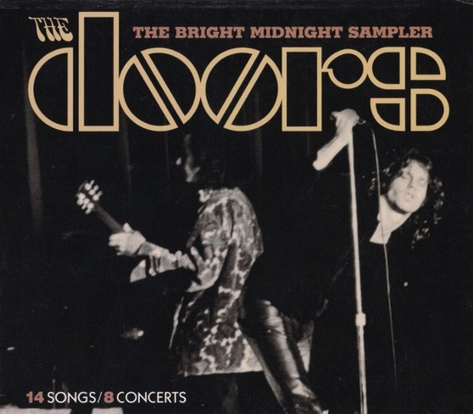

| |

|
|
The Doors: The Bright Midnight Sampler
Bright Midnight (September 2000)
The Doors: Bright Midnight:
Live in America
Elektra / Bright Midnight (February 2001)
I remember an article in the local newspaper, advertising
that the Doors
were to establish an own subsidiary publishing label, to
dive into the
vaults and to pull out all existing material that had
been left untouched
for decades... I was both thrilled and held back,
probably bordering
suspicion even. Why that is, I will explain after the
following bit of
history, or rather the misplaced irony thereof.
What we -Rainer and myself- have been doing for a few
years now,
is to not only reintroduce the Doors Quarterly Magazine
as it once was,
making sure that both the publications as well as
Rainer's many years of
dedication and aspiring work would not go down unnoticed
in the 21st
Century. It is also about moving forward from the time
when DQM seized
to exist. To rewind and focus a bit on the more important
things in 'Doors
land' since the final issue of DQM, in June of 1999.
Prominently, the
many releases of music both reissued and previously
unpublished -
officially that is. Bootlegs released after 1999, still
relevant and
worthwile reviewing today: I'm sure that we will find
them and give
them proper attention. So, that being the motivation to
go back 16
years in time and write about what 'Doors land' looked
like then, here
is a first of what might be called 'retro reviews'.
Explaining my cautious approach to the aforementioned
news from the
turning of the Century... Wheeling back some more, say to
1983 perhaps,
is the key to understanding what it was like to be a
demanding Doors fan
in pre Bright Midnight Archives times, perhaps in pre
internet times as well
for that matter. Sure, 'Alive She Cried' (1983) was
awesome for the lion's
share of the public - unpublished recordings, including
two songs that
weren't on any of the existing albums, not forgetting
Jim's poetry in places.
Great! Yet for the more weathered fan, and in particular
for the long time
collector of tapes and bootlegs, it was but the tip of
the iceberg and hardly
anything new at all. They knew about the real extent of
the vaults, they
could tell that most of the material on the new album was
heavily edited,
cut and pieced together, not unlike 'Absolutely Live' 13
years prior to date.
Still, better than nothing at all was the motto for even
the most die hard
completist. The 1980's was the decade of a handful of
video releases,
which in term held a wealth of freshly surfaced material,
most notably 'Live
at the Hollywood Bowl' (1987) from which a mini (!) LP
was derrived. The
optimistic, and perhaps correct way to label the vinyl /
cassette / CD, would
be EP; Extended Play. Cool! Although many a fan preffered
to plug the video
tape of the concert instead: the complete concert, or
should I say: what
was available at the time. Surely, soon enough audio tape
copies were
being made, opening the floodgates for bootleggers to
confiscate a piece
of the cake.
After that, things got quiet, both of the 1980's live
albums quickly went
out of print, and by the end of the decade there was a
certain gap in the
Doors back catalogue on CD: 'Absolutely Live'. That soon
changed in 1991,
in the slipstream of 'The Doors' movie, with the huge
boost of interest in
the band: the Doors were hot, and they were all over the
place. 'The Doors
in Concert' was advertised as being the set compiling,
and thus making
obsolete, the existing live catalogue at the time, but in
that it failed.
"Where's the Hollywood Bowl concert?!"...
Eventually, the wait for that
brought us as far as 2012, that year finally produced the
concert in its
entirity - more on that in a future feature. But that was
it, really.
Reissues and compilations, yes, we got all of those.
Leaving us wondering
when we would be granted something new finally, and what
would that
be; were the vaults ever to be exposed in the first
place? Sure! But it was
a long slow process, a project lingering for too long a
time, the conception
of what we had all been waiting for: 'The Doors: Box Set'
(1997). Much,
very much can be said about this and I won't go into any
detail for it has
been reviewed with great precission for the Doors
Quarterly at the time of
its release. I, to be completely honest, was
disappointed. But that was me,
with a flightcase stuffed with bootlegs in the CD format,
and with a clear
idea of what else was out there; untouched and ignored,
while disc number
4 of this long awaited archival project was nothing more
than an upteenth
collection of album tracks! Further cut, copy and paste
jobs on the 'Live
in New York' disc - 'Absolutely Live' and 'Alive She
Cried' style, all over
again. So, no. Once again: Great! Cool! But no. And that
was pretty much
it for the remainder of the Century, the Millennium
even... Until that
newspaper ad, some time in the year 2000.
Hoping for the best, though expecting the usual, Doors
fans around the
world eagerly awaited the birth of 'The Bright Midnight
Sampler'.
Announced as being an apetiser for the many things to
come in due
time, at hindsight it's nothing more than a selection of
the concerts that
have been dedicated to CD and/or LP in their entirity -
bar one; at the
time of writing. But hey! The day this baby landed in my
mailbox...
Let's have a closer look:
'Light My Fire' opens the set. Thankfully not the
rendition we got on both
'Alive She Cried' and 'The Doors in Concert', this is
from the Philadelphia
show. And, more importantly: this first track was an
early sign that a
different deck of cards had been laid out. No cuts, no
edits, no taking out
the weak bits, leaving in the bum notes and further
flaws... This was real
and raw! Not the best ever performance of the song, not
by far, but who
cares! At last, finally here was something new. 'Been
Down So Long'
followed, from the excellent concert the Doors did in
Detroit - remember,
these recordings were all done in 1969 and 1970, with a
live album in
mind. A very rare live take of the 'L.A. Woman' album
song, unreleased
at the time of the concert, 'Been Down So Long' was new
to the Detroit
crowd filling the Cobo Arena on May 8, 1970. A mean
stomping blues
the way only the Doors could do it, courtesy of their
forming days,
playing blues standards at the clubbing scene of Los
Angeles.
That was it, by the time of this second track I was
stunned! Next up was
more of the blues: 'Back Door Man', as part of a medley
coupled with
'Love Hides' and 'Five To One' - exactly the way people
attending the
show in Pittsburgh heard it 30 years prior to date; no
edits. Listening
closely for echoes from the existing live albums left the
spectator
unsuccesful. Has this "sampler" really been put
together in a fashion
void of any takes, of cuts being repeated? It sure seems
to be just that,
an assumption further materialised by the next couple of
songs: both
from the shows at the Aquarius Theatre in Los Angeles,
'Touch Me' and
'The Crystal Ship' debuted as live tracks here. Onwards,
'Break On
Through' does sound familiar here and there, it is
possible that this
performance from the Felt Forum in New York City was
partly used for
the oddly titled 'Break On Thru, #2' on initial pressings
of 'Absolutely
Live'. The same could be said about the following,
'Roadhouse Blues'
from Boston: tiny bits and pieces, certain fragments do
sound as if
they were thrown in the mix for the well known rendition
that has
appeared on so many albums and videos, starting with 'An
American
Prayer' in 1978. Ignoring 'Bellowing' from Boston, none
of the
remaining three recordings had ever been used before in
any way:
'Alabama Song' (New York), 'The End' (Detroit), 'Love Me
Two Times /
Baby Please Don't Go / St. James Infirmary'
(Bakersfield). The medley,
perhaps being the biggest surprise, is of a lesser sound
quality; an
audience registration instead of the soundboard
recordings by the team
working for Elektra Records. Rough and raw, it's what we
had been
demanding for so many years, so no one's complaining
about this little
gem, included for its sheer rarity, unheard of by the non
bootleg
buying / trading public.
Overall evaluation? At the time, in September of 2000:
eleven out of ten!
And the best news was that this would only be a start, so
it seemed that
with Bright Midnight Archives, the tide had turned and
Doors fans would
finally get what they had been anticipating for all those
years.
With 'Bright Midnight', to be precise, the additional
word 'Archives' was
introduced a few years later on. And the future would
hold further change
for the young upstart label. For the first handful of
releases, the albums
used to be available from the Doors and Rhino Handmade
websites only.
There was no sign of the new product at shops, perhaps
the reason for
Elektra to launch their own version of the album in 2001.
'Bright Midnight:
Live in America' consisted of the exact same content so
one could get
either this or that, completists hot on the heels of this
outpouring of new
material, cashed in on both; the fact that Elektra made
it a "Limited
Edition" helped push sales of their clone of the
amazing 'The Bright
Midnight Samper'.
Perhaps a bit dated nowadays, with all of the featured
shows out on CD
in their entirety; bar one: we're still waiting for
Bakersfield. But the
album makes for an excellent representative of what the
Doors were all
about in concert, and we should think about it as if it
were the year 2000
still. Perhaps it is very fitting for me to be doing this
retro reviewing today,
now that the 50th Anniversary of the band is in sight; no
doubt that
January 2017 and the following months and years will
yield further
offerings from the Doors archives. Or so we are being
promised. Until
then, Bright Midnight Archives is what we'll be focussing
on.
To be continued...
� Kevin Chiotis for the Doors Quarterly Magazine Online
- June 2016
|
|